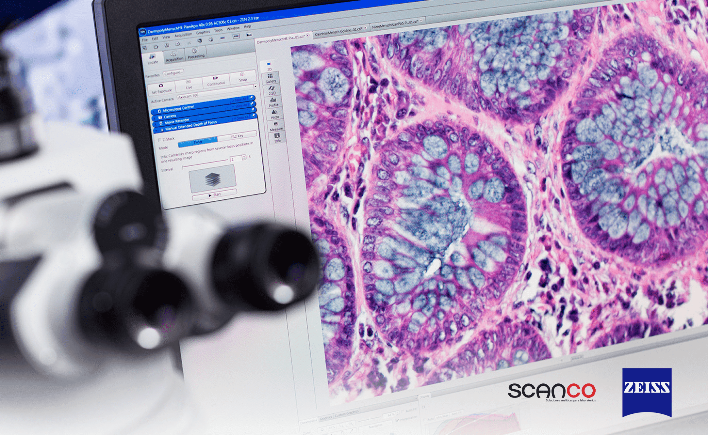

Liceo en ciencia y tecnologia de occidente "Las Águilas"
Microscopía
La microscopía es una técnica fundamental en la ciencia que permite observar estructuras que son invisibles a simple vista. Gracias a los microscopios, se han logrado grandes avances en biología, medicina y otras disciplinas. En este trabajo se abordarán los tipos de microscopios, su funcionamiento y su importancia en el estudio de las células.

Objetivos
Objetivos Específicos
- Diferenciar los términos relacionados con la microscopía.